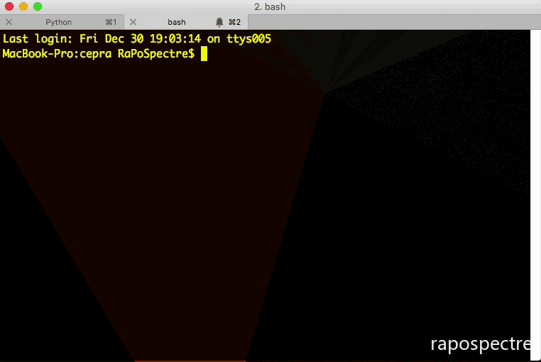

一、Celery实例化及配置
1、实例化
Celery库必须在使用前实例化，这个实例被称为应用程序（或简称为应用程序）。应用程序是线程安全的，因此具有不同配置，组件和任务的多个Celery应用程序可以共存在同一进程空间中。
创建celery实例：实例化过程可以为celery指定名字，否则默认为__main__
>>> from celery import Celery
>>> app = Celery()
>>> app
<Celery __main__:0x100469fd0>
2、配置
2.1 设置Celery的配置，通过Celery.conf：
>>> app.conf.CELERY_TIMEZONE
'Europe/London'
#多组
>>> app.conf.update(
... CELERY_ENABLE_UTC=True,
... CELERY_TIMEZONE='Europe/London',
...)
from celery import Celery
app = Celery()
app.config_from_object('celeryconfig')
2.3 使用config对象设置：
from celery import Celery
app = Celery()
class Config:
CELERY_ENABLE_UTC = True
CELERY_TIMEZONE = 'Europe/London'
app.config_from_object(Config)
# or using the fully qualified name of the object:
# app.config_from_object('module:Config')
2.4 Celery.config_from_envvar()从环境变量中读取配置
import os
from celery import Celery
#: Set default configuration module name
os.environ.setdefault('CELERY_CONFIG_MODULE', 'celeryconfig')
app = Celery()
app.config_from_envvar('CELERY_CONFIG_MODULE')
2、时区、时间
所有时间和日期，内部和消息都使用UTC时区。
当WorKer收到消息时，例如使用倒计时设置，将UTC时间转换为本地时间。 如果您希望使用与系统时区不同的时区，则必须使用CELERY_TIMEZONE设置进行配置：
app.conf.CELERY_TIMEZONE = 'Europe/London'
二、Celery创建、启动
1、创建项目
建一个proj项目，目录结构：
proj/__init__.py
/celery.py
/tasks.py
其中，celery.py， 在此模块中，创建了Celery实例（有时称为应用程序）。 要在项目中使用Celery，只需导入此实例即可。
配置参数介绍：broker参数配置消息队列存储后端，backend参数配置结果存储后端。默认情况下，backend是禁用的。include参数是启动时需要导入的模块列表，可以在这里添加我们的任务模块。
2、执行worker后输出结果解析
$ celery worker --app=proj -l info 启动celery的woker任务执行者
broker即消息队列存储后端；
concurrency是prefork同时并发处理任务的数量，默认情况下并发量是cpu数，通过-c参数指定，除了默认的prefork，celery还支持eventlet、gevent、threads等；
events，启动时celery会发送监控消息，通过-E管理；
queues，多个消息队列；
celery worker --help查看命令参数列表
--app参数指定要使用的Celery应用程序实例，它必须以module.path：attribute的形式。
但它也支持一个快捷方式——如果只指定一个包名称，它将尝试按照以下顺序搜索应用程序实例：
例如：使用--app = proj：
proj.app
proj.celery
或者该module中的任何属性，该值属于Celery应用程序，或者如果没有找到该属性，则会尝试名为proj.celery的子模块：
proj.celery.app
proj.celery.celery
或者在proj.celery模块中的任何属性，其值为Celery应用程序。
该方案模拟文档中使用的实践，即单个包含的模块的proj：app，以及较大项目的proj.celery：app。
3、celery multi后台启动worker
使用celery multi命令启动一个或多个worker在后台。该命令可以start、restart、stop、stopwait， Celery multi不存储有关worker的信息，因此在重新启动时需要使用相同的命令行参数。 停止时，必须使用相同的pidfile和logfile参数。
默认情况下，它将在当前目录中创建pid和日志文件，以防止多个Worker同时启动，建议您将它们放在专用目录中：
$ mkdir -p /var/run/celery
$ mkdir -p /var/log/celery
$ celery multi start w1 -A proj -l info --pidfile=/var/run/celery/%n.pid \
--logfile=/var/log/celery/%n.pid
使用Multi命令可以启动多个Worker，并且还有一个强大的命令行语法来为不同的Worker指定参数，例如：
$ celery multi start 10 -A proj -l info -Q:1-3 images,video -Q:4,5 data \
-Q default -L:4,5 debug
三、Celery任务调用
1、直接调用
通过调用任务的delay()方法，如：
>>> add.delay(2, 2)
>>> add.apply_async((2, 2))
这个方法其实是apply_async()函数的快捷方式。apply_async()的参数更细化，包括指定队列、运行时间等等。如：
>>> add.apply_async((2, 2), queue='lopri', countdown=10)
#在上述示例中，任务将被发送到名为lopri的队列，任务将在消息发送10秒后执行。
2、任务追踪
delay（），apply_async（）和apply（__call__）是Celery调用的API，它们也用于子任务。每个任务调用都将被赋予唯一的标识符（UUID），这是任务ID。 delay和apply_async方法返回一个AsyncResult实例，可以用来跟踪任务的执行状态。 但是，为此，您需要启用结果后端backend，以便将状态存储在某处。
如果您配置了后端设备，您可以检索任务的返回值：
>>> res = add.delay(2, 2)
>>> res.get(timeout=1)
4
>>> res.id
d6b3aea2-fb9b-4ebc-8da4-848818db9114
如果任务引发异常，您还可以检查异常和追溯，实际上，result.get（）将默认传播任何错误：
>>> res = add.delay(2)
>>> res.get(timeout=1)
Traceback (most recent call last):
File "<stdin>", line 1, in <module>
File "/opt/devel/celery/celery/result.py", line 113, in get
interval=interval)
File "/opt/devel/celery/celery/backends/amqp.py", line 138, in wait_for
raise self.exception_to_python(meta['result'])
TypeError: add() takes exactly 2 arguments (1 given)
如果您不希望传播错误，则可以通过传递传播参数来禁用该错误：
>>> res.get(propagate=False)
TypeError('add() takes exactly 2 arguments (1 given)',)
在这种情况下，它将返回引发的异常实例，因此要检查任务是成功还是失败，您将必须在结果实例上使用相应的方法：
>>> res.failed()
True
>>> res.successful()
False
那么它如何知道任务是否失败？ 可以通过查看任务状态来了解：
任务只能处于单一状态，但可以通过多个状态进行。 典型任务的阶段可以是：
PENDING -> STARTED -> SUCCESS
启动状态是一个特殊状态，只有在启用CELERY_TRACK_STARTED设置时才会记录，或者为任务设置了@task（track_started = True）选项。
挂起状态实际上不是记录状态，而是未知的任何任务ID的默认状态，您可以从此示例中看到：
>>> from proj.celery import app
>>> res = app.AsyncResult('this-id-does-not-exist')
>>> res.state
'PENDING'
如果任务被重试，这些阶段可能变得更复杂，例如，对于重试两次阶段的任务：
PENDING -> STARTED -> RETRY -> STARTED -> RETRY -> STARTED -> SUCCESS
3、任务传递
您刚刚学习了如何使用tasks delay方法调用任务，这是一般需求，但有时我们希望将任务调用的签名传递给另一个进程，或者将其作为另一个函数的参数传递给该Celery，这就是称为子任务的东西。
子任务以一种方式包装单个任务调用的参数和执行选项，使其可以传递给函数，甚至可以串行化并通过电子邮件发送。
您可以使用参数（2，2）创建添加任务的子任务，并且如下所示为10秒的倒数：
>>> add.subtask((2, 2), countdown=10)
tasks.add(2, 2)
#快捷方式
>>> add.s(2, 2)
tasks.add(2, 2)
子任务实例还支持调用API，这意味着它们具有延迟和apply_async方法。
但是有一个区别在于子任务可能已经具有指定的参数签名。 添加任务需要两个参数，因此指定两个参数的子任务将完成一个签名：
>>> s1 = add.s(2, 2)
>>> res = s1.delay()
>>> res.get()
4
但是，您也可以创建不完整的signatures来创建我们所谓的部分内容：
# incomplete partial: add(?, 2)>>> s2 = add.s(2)
s2现在是一个部分子任务，需要另一个参数才能完成，调用子任务时可以解决这个问题：
# resolves the partial: add(8, 2)
>>> res = s2.delay(8)
>>> res.get()
10
在这里，你添加了参数8，它已经被添加到现有参数2中，形成了一个完整的add（8,2）签名。
关键字参数也可以稍后添加，然后将它们与任何现有的关键字参数进行合并，但以新的参数为优先：
>>> s3 = add.s(2, 2, debug=True)
>>> s3.delay(debug=False) # debug is now False.
如所述子任务支持调用API，这意味着：
subtask.apply_async(args=(), kwargs={}, **options)
使用可选的部分参数和部分关键字参数调用子任务。 还支持部分执行选项。
subtask.delay(*args, **kwargs)
apply_async的Star参数版本。 任何参数都将添加到签名中的参数中，并且关键字参数与任何现有的键合并。
所以这一切似乎都是非常有用的，但是你可以做些什么呢？ 为了达到这一点，我必须介绍canvas primitives...
4、The Primitives
原语Primitives本身就是子任务，因此它们可以以多种方式组合起来，以构成复杂的工作流程。
Groups
一个组并行调用任务列表，它返回一个特殊的结果实例，可以将结果作为一组进行检查，并按顺序检索返回值。
>>> from celery import group
>>> from proj.tasks import add
>>> group(add.s(i, i) for i in xrange(10))().get()
[0, 2, 4, 6, 8, 10, 12, 14, 16, 18]
Partial group
>>> g = group(add.s(i) for i in xrange(10))
>>> g(10).get()
[10, 11, 12, 13, 14, 15, 16, 17, 18, 19]
Chains
任务可以链接在一起，以便在一个任务返回后调用另一个任务：
>>> from celery import chain
>>> from proj.tasks import add, mul
# (4 + 4) * 8
>>> chain(add.s(4, 4) | mul.s(8))().get()
64
or a partial chain:
# (? + 4) * 8
>>> g = chain(add.s(4) | mul.s(8))
>>> g(4).get()
64
链也可以这样写：
>>> (add.s(4, 4) | mul.s(8))().get()
64
Chords
Chords是具有回调的组：
>>> from celery import chord
>>> from proj.tasks import add, xsum
>>> chord((add.s(i, i) for i in xrange(10)), xsum.s())().get()
90
链接到另一个任务的组将被自动转换为和弦：
>>> (group(add.s(i, i) for i in xrange(10)) | xsum.s())().get()
90
由于这些原语都是子任务类型，所以几乎可以将它们组合起来，例如：
>>> upload_document.s(file) | group(apply_filter.s() for filter in filters)
Routing
Celery支持AMQP提供的所有路由设施，但它也支持将消息发送到命名队列的简单路由。
CELERY_ROUTES设置使您能够按名称路由任务，并将所有内容集中在一个位置：
app.conf.update(
CELERY_ROUTES = {
'proj.tasks.add': {'queue': 'hipri'},
},
)
您还可以在运行时使用apply_async的queue参数指定队列：
>>> from proj.tasks import add
>>> add.apply_async((2, 2), queue='hipri')
然后，您可以通过指定-Q选项使员工从此队列中消耗：
$ celery -A proj worker -Q hipri
您可以通过使用逗号分隔列表来指定多个队列，例如，您可以使工作人员从缺省队列和hipri队列中消费，其中默认队列名为celery，因为历史原因：
$ celery -A proj worker -Q hipri,celery
队列的顺序并不重要，因为工作人员将对队列给予相等的权重。
四、Celery实用命令行
1、命令行帮助
用法: celery <command> [options]
celery -h, --help 显示此帮助消息并退出
--version 显示程序的版本号并退出
2、命令类型
| celery worker -n --hostname 自定义worker名字，可以扩展(如, 'worker@%h'). 扩展: %h (hostname), %n (name) and %d, (domain).
-D, --detach 启动worker作为后台进程。
-l LOGLEVEL, --loglevel LOGLEVEL 日志级别，选择DEBUG, INFO, WARNING,ERROR, CRITICAL, or FATAL.
-c CONCURRENCY, --concurrency CONCURRENCY 处理队列的子进程数。默认值是系统上可用的CPU数量。
--queues QUEUES, -Q QUEUES 要为此worker启用的队列列表，用逗号分隔。缺省情况下，所有配置的队列都被使能。例如：-Q video,image
--exclude-queues EXCLUDE_QUEUES, -X EXCLUDE_QUEUES 此worker禁用的队列列表，用逗号分隔。缺省情况下，所有配置的队列都被使能。例如：-X video,image.
--include INCLUDE, -I INCLUDE 逗号分隔的要导入的其他模块列表。例如：-I foo.tasks,bar.tasks
--autoscale AUTOSCALE 通过提供max_concurrency，min_concurrency启用自动缩放功能。例如：--autoscale=10,3（ 始终保持3个进程，但如果需要，增长到10个）
-f LOGFILE, --logfile LOGFILE 日志文件的路径。 如果没有指定logfile，则使用stderr。
--pidfile PIDFILE 可选文件用于存储进程pid。 如果此文件已存在且pid仍然存在，程序将无法启动。
-B, --beat 还要运行Celery beat定期任务调度程序。请注意，这个服务只能有一个实例。注意:: -B旨在用于开发目的。 对于生产环境，您需要单独启动Celery。
-s SCHEDULE_FILENAME, --schedule-filename SCHEDULE_FILENAME, --schedule SCHEDULE_FILENAME 使用-B选项运行时调度数据库的路径。 默认为celerybeat-schedule。 扩展名“.db”可以附加到文件名。 应用优化配置文件。 支持：default, fair
--scheduler SCHEDULER 要使用的Scheduler类。 默认值为celery.beat.PersistentScheduler
| celery events -d, --dump 将事件发至stdout.
--detach Camera: 在后台分离并作为守护进程运行。
-l LOGLEVEL, --loglevel LOGLEVEL 日志等级
| celery beat --detach 分离并在后台运行作为守护进程。
-s SCHEDULE, --schedule SCHEDULE 路径数据库。 默认为celerybeat- schedule。 扩展名'.db'可以附加到文件名。 默认是celerybeat-schedule。
-S SCHEDULER, --scheduler SCHEDULER 要使用的Scheduler类。 默认值为celery.beat.PersistentScheduler。
-l LOGLEVEL, --loglevel LOGLEVEL 日志级别，选择 DEBUG, INFO, WARNING, ERROR, CRITICAL, or FATAL.
| celery shell
| celery multi
| celery amqp
远程控制：
| celery status
| celery inspect --help 一系列
| celery control --help 一系列
+ 实用工具:
| celery purge
| celery list
| celery call
| celery result
| celery migrate
| celery graph
| celery upgrade
+ 调试工具:
| celery report
| celery logtool
3、参数
全局选项:
-A APP, --app APP 指定celery实例，如：--app=proj 或：-A proj
-b BROKER, --broker BROKER 指定
--loader LOADER
--config CONFIG
--workdir WORKDIR
--no-color, -C 不显示颜色
--quiet, -q 不显示过多输出.
--verbose: 显示更多的输出
--nosplash: 不显示程序信息
3、操作实例
$ celery --app=app worker -l info
$ celery worker --help
启动多个worker
$ celery worker --loglevel=INFO --concurrency=10 -n worker1.%h
$ celery worker --loglevel=INFO --concurrency=10 -n worker2.%h
$ celery worker --loglevel=INFO --concurrency=10 -n worker3.%h
- ％h：主机名，包括域名。
- ％n：仅主机名。
- ％d：仅限域名。
- worker1.%n -> worker1.george
4、远程控制
如果您使用RabbitMQ（AMQP），Redis或MongoDB作为代理，那么您可以在运行时控制和检查工作。例如，可以查看worker正在处理的任务
$ celery -A proj inspect active
这是通过使用广播消息传递来实现的，因此所有远程控制命令都由群集中的每个工作人员接收。
您还可以使用--destination选项指定一个或多个工作者对请求进行操作，该选项是以逗号分隔的工作主机名列表：
如果没有提供目的地，那么每个worker都将采取行动并回复该请求。
celery检查命令包含不改变任何工作的任何命令，它只会回复关于worker内部正在发生的信息和统计信息。有关可以执行的检查命令的列表：
$ celery -A proj inspect --help
然后是Celery控件命令，其中包含在运行时实际更改worker中的内容的命令：
$ celery -A proj control --help
例如，您可以强制WOrkers启用事件消息（用于监视任务和wokers）：
$ celery -A proj control enable_events
当启用事件时，您可以启动事件转储程序来查看WorKers正在执行的操作：
$ celery -A proj events --dump
或者你可以启动curses界面：
完成监控后，您可以再次禁用事件：
$ celery -A proj control disable_events
Celery status命令还使用远程控制命令，并显示集群中的在线WorKers列表：
| celery inspect --help
| celery inspect active
| celery inspect active_queues
| celery inspect clock
| celery inspect conf [include_defaults=False]
| celery inspect memdump [n_samples=10]
| celery inspect memsample
| celery inspect objgraph [object_type=Request] [num=200 [max_depth=10]]
| celery inspect ping
| celery inspect query_task [id1 [id2 [... [idN]]]]
| celery inspect registered [attr1 [attr2 [... [attrN]]]]
| celery inspect report
| celery inspect reserved
| celery inspect revoked
| celery inspect scheduled
| celery inspect stats
| celery control --help
| celery control add_consumer <queue> [exchange [type [routing_key]]]
| celery control autoscale [max [min]]
| celery control cancel_consumer <queue>
| celery control disable_events
| celery control election
| celery control enable_events
| celery control heartbeat
| celery control pool_grow [N=1]
| celery control pool_restart
| celery control pool_shrink [N=1]
| celery control rate_limit <task_name> <rate_limit (e.g., 5/s | 5/m | 5/h)>
| celery control revoke [id1 [id2 [... [idN]]]]
| celery control shutdown
| celery control terminate <signal> [id1 [id2 [... [idN]]]]
| celery control time_limit <task_name> <soft_secs> [hard_secs]
四、Celery使用rabbitmq作为队列
默认情况下，默认配置未针对吞吐量进行优化，它尝试在许多短任务和较少的长任务之间走中间路，吞吐量和公平调度之间的折中。
如果您使用RabbitMQ，那么您应该安装librabbitmq模块，这是一个在C中实现的AMQP客户端：
$ pip install librabbitmq
五、Celery关闭重启，任务撤销
关闭
应使用TERM信号完成关机。
当关闭被启动时，worker在终止之前完成所有当前正在执行的任务，因此如果这些任务很重要，则在进行任何激烈的操作（如发送KILL信号）之前，您应该等待它完成。
如果worker在指定时间内不会关机，例如由于任务卡在无限循环中，您可以使用KILL信号强制终止工作人员，但请注意，当前正在执行的任务将丢失（除非任务具有 acks_late选项集）。
此外，由于进程不能覆盖KILL信号，因此worker将无法收到其子进程，因此请务必手动进行。 这个命令通常会做到这一点：
$ ps auxww | grep 'celery worker' | awk '{print $2}' | xargs kill -9
重启
除了关闭重开，还可以通过HUP信号重启：
随后worker将以与原来相同的参数来替换自己的新实例。
HUP仅使用于后台守护进程的worker。
撤销任务
支持的broker：amqp、redis
当worker收到撤销请求时，它将跳过执行任务，但除非设置了终止选项，否则它不会终止已执行的任务。
当任务被卡住时，终止选项是管理员的最后手段。 它不是为了终止任务，它用于终止正在执行任务的进程，并且该进程可能已经在信号发送时已经开始处理另一个任务，因此，在这个原因中，你绝对不能以编程方式调用它。
如果终止设置，则处理该任务的worker子进程将被终止。 发送的默认信号是TERM，但可以使用signal参数指定。 信号可以是Python标准库中信号模块中定义的任何信号的大写名称。
终止任务也会撤销它。
实例：
>>> result.revoke()
>>> AsyncResult(id).revoke()
>>> app.control.revoke('d9078da5-9915-40a0-bfa1-392c7bde42ed')
>>> app.control.revoke('d9078da5-9915-40a0-bfa1-392c7bde42ed',
... terminate=True)
>>> app.control.revoke('d9078da5-9915-40a0-bfa1-392c7bde42ed',
... terminate=True, signal='SIGKILL')
撤销多个任务
>>> app.control.revoke([
... '7993b0aa-1f0b-4780-9af0-c47c0858b3f2',
... 'f565793e-b041-4b2b-9ca4-dca22762a55d',
... 'd9d35e03-2997-42d0-a13e-64a66b88a618',
])
持续撤销
时间限制
一个任务可能会永远运行，如果你有很多任务等待一些事情永远不会发生，你将阻止worker无限期地处理新的任务。 防止这种情况发生的最佳方式是启用时间限制。
时间限制（-time-limit）是任务可以运行的最大秒数，在执行该进程的进程终止并被新进程替换之前。 您还可以启用软限时（-soft-time-limit），这引发了一个例外，任务可以在硬限制杀死之前捕获清理：
from myapp import appfrom celery.exceptions import SoftTimeLimitExceeded
@app.taskdef mytask():
try:
do_work()
except SoftTimeLimitExceeded:
clean_up_in_a_hurry()
时间限制也可以使用CELERYD_TASK_TIME_LIMIT / CELERYD_TASK_SOFT_TIME_LIMIT设置进行设置。
在运行时更改时间限制
有一个远程控制命令，可以更改任务的名称为time_limit的软和时间限制。
>>> app.control.time_limit('tasks.crawl_the_web',
soft=60, hard=120, reply=True)
六、队列相关
队列
worker实例可以从任意数量的队列中消费。 默认情况下，它将从CELERY_QUEUES设置中定义的所有队列（如果没有指定默认值为名称为celery的队列）消费。
您可以通过在-Q选项中提供逗号分隔的队列列表来指定启动时要消费的队列：
$ celery worker -l info -Q foo,bar,baz
如果在CELERY_QUEUES中定义了队列名称，那么它将使用该配置，但是如果队列列表中没有定义，Celery会为您自动生成一个新队列（取决于CELERY_CREATE_MISSING_QUEUES选项）。
您还可以使用远程控制命令add_consumer和cancel_consumer告诉工作人员在运行时启动和停止使用队列。
队列添加消费者
$ celery control add_consumer foo
-> worker1.local: OK
started consuming from u'foo'
如果要指定特定的worker，可以使用--destination`参数：
$ celery control add_consumer foo -d worker1.local
队列：取消消费者
$ celery control cancel_consumer foo
$ celery control cancel_consumer foo -d worker1.local
队列：活动队列列表
$ celery inspect active_queues
像所有其他远程控制命令一样，它还支持--destination参数，用于指定哪些工作人员应该回复请求：
$ celery inspect active_queues -d worker1.local
检查worker
celery.control.inspect允许您检查运行的工作人员。 它使用遥控器命令。
您也可以使用celery命令来检查工作人员，并且它支持与Celery.control接口相同的命令。
更改tasks.crawl_the_web任务的时间限制为一分钟的软时限，并且两分钟的困难时间限制的示例：
# Inspect all nodes.
>>> i = app.control.inspect()
# Specify multiple nodes to inspect.
# Specify a single node to inspect.
统计
远程控制命令检查stats（或stats（））将为您提供有关该worker的有用（或不太有用）统计信息的长列表：
$ celery -A proj inspect stats
路由(Route)与队列(Queue)
如果不特殊指定，Celery将会创建名为celery的默认队列，用于消息传递。但在某些应用场景下，例如不同任务的耗时和优先级不同，不应让耗时低和优先级高的任务等待耗时较高优先级较低的任务执行，毕竟如上面提到的，worker进程的数量是有限的，过多的任务会造成任务等待，此时需要把不同的消息投递到不同的任务队列处理。
六、celery修饰器介绍
关于task修饰器，实际上是将函数修饰成一个celery task对象，可以加上参数来决定这些对象的属性。
首先，我们可以让被修饰的函数成为 task 对象的绑定方法，这样就相当于被修饰的函数 add 成了 task 的实例方法，可以调用 self 获取当前 task 实例的很多状态及属性。
其次，我们也可以自己复写 task 类然后让这个自定义 task 修饰函数 add ，来做一些自定义操作。
2.1 根据任务状态执行不同操作
任务执行后，根据任务状态执行不同操作需要我们复写 task 的 on_failure、on_success 等方法：
# tasks.py
class MyTask(Task):
def on_success(self, retval, task_id, args, kwargs):
print 'task done: {0}'.format(retval)
return super(MyTask, self).on_success(retval, task_id, args, kwargs)
def on_failure(self, exc, task_id, args, kwargs, einfo):
print 'task fail, reason: {0}'.format(exc)
return super(MyTask, self).on_failure(exc, task_id, args, kwargs, einfo)
@app.task(base=MyTask)
def add(x, y):
return x + y
任务执行和失败都会先执行调用上面的MyTask函数。
2.2 绑定任务为实例方法
# tasks.py
from celery.utils.log import get_task_logger
logger = get_task_logger(__name__)
@app.task(bind=True)
def add(self, x, y):
logger.info(self.request.__dict__)
return x + y
执行中的任务获取到了自己执行任务的各种信息，可以根据这些信息做很多其他操作，例如判断链式任务是否到结尾等等
关于 celery.task.request 对象的详细数据可以
看这里2.3 任务状态回调
实际场景中得知任务状态是很常见的需求，对于 Celery 其内建任务状态有如下几种：
参数 | 说明 |
PENDING | 任务等待中 |
STARTED | 任务已开始 |
SUCCESS | 任务执行成功 |
FAILURE | 任务执行失败 |
RETRY | 任务将被重试 |
REVOKED | 任务取消 |
当我们有个耗时时间较长的任务进行时一般我们想得知它的实时进度，这里就需要我们自定义一个任务状态用来说明进度并手动更新状态，从而告诉回调当前任务的进度，具体实现：
# tasks.py
from celery import Celery
import time
@app.task(bind=True)
def test_mes(self):
for i in xrange(1, 11):
time.sleep(0.1)
self.update_state(state="PROGRESS", meta={'p': i*10})
return 'finish'
# trigger.py
from task import add,test_mes
import sys
def pm(body):
res = body.get('result')
if body.get('status') == 'PROGRESS':
sys.stdout.write('\r任务进度: {0}%'.format(res.get('p')))
sys.stdout.flush()
else:
print '\r'
print res
r = test_mes.delay()
print r.get(on_message=pm, propagate=False)

2.4 定时/周期任务
Celery 进行周期任务也很简单，只需要在配置中配置好周期任务，然后在运行一个周期任务触发器（ beat ）即可：
新建 Celery 配置文件 celery_config.py:
# celery_config.py
from datetime import timedelta
from celery.schedules import crontab
CELERYBEAT_SCHEDULE = {
'ptask': {
'task': 'tasks.period_task',
'schedule': timedelta(seconds=5),
},
}
CELERY_RESULT_BACKEND = 'redis://localhost:6379/0'
配置中 schedule 就是间隔执行的时间，这里可以用 datetime.timedelta 或者 crontab 甚至太阳系经纬度坐标进行间隔时间配置，具体可以
参考这里如果定时任务涉及到 datetime 需要在配置中加入时区信息，否则默认是以 utc 为准。例如中国可以加上：
CELERY_TIMEZONE = 'Asia/Shanghai'
然后在 tasks.py 中增加要被周期执行的任务：
# tasks.py
app = Celery('tasks', backend='redis://localhost:6379/0', broker='redis://localhost:6379/0')
app.config_from_object('celery_config')
@app.task(bind=True)
def period_task(self):
print 'period task done: {0}'.format(self.request.id)
然后重新运行 worker，接着再运行 beat：
2.5 链式任务
有些任务可能需由几个子任务组成，此时调用各个子任务的方式就变的很重要，尽量不要以同步阻塞的方式调用子任务，而是用异步回调的方式进行链式任务的调用：
七、celery分布式消费者
Celery也是一个分布式的消息系统，那么如何利用分布式的方法执行任务呢？
Celery的分布式实际包含两个层次：
- Distribute work on a given machine across all CPUs
- Distribute work to many machines
先说第一点，默认情况下，Celery在一台机器上启动worker，worker的进程数量和机器的CPU个数一致。但也可以通过concurrency参数控制启动worker的进程数量：
同时启动5个worker进程
celery -A tasks worker --loglevel=INFO --concurrency=5
比如你的机器只有一个CPU，但仍然可以通过上述方法启动5个worker进程，在某些IO密集型的任务中，可以考虑启动worker的数量多于CPU数量，在CPU密集型的任务中，这样的操作可能没有什么好处。
再说第二点，因为Celery只指定了worker的broker，所以只需要在不同机器上启动worker，它们都会从相同的broker中获取任务并处理。
在考虑不同机器上的操作时，涉及远程控制的概念。
- celery inspect
观察所有运行worker的信息，例如观察当前处于活跃状态的worker和task：
celery -A tasks inspect active
- celery control
控制worker的行为，例如向worker中增加对某队列的消费：
celery control -d w1.e.com add_consumer queue_name - celery status
观察当前worker状态
celery -A tasks status
# celery@iZ25d0yvrwwZ: OK
#
# 1 node online.
八、celery实践
提示与最佳实践
如果不想要结果，一定要设置 ignore_result选项, 甚至可以使用CELERY_IGNORE_RESULT设置全局禁用结果。
@app.task(ignore_result=True)
如果不使用速率限制，请禁用它们
如果您没有使用任何任务，建议完全禁用速率限制。 这是因为速率限制子系统引入了相当多的复杂性。
将CELERY_DISABLE_RATE_LIMITS设置设置为全局禁用速率限制：
CELERY_DISABLE_RATE_LIMITS = True
避免启动同步子任务
任务等待另一个任务的结果是真的没有效率，如果工作池耗尽，甚至可能会导致死锁。